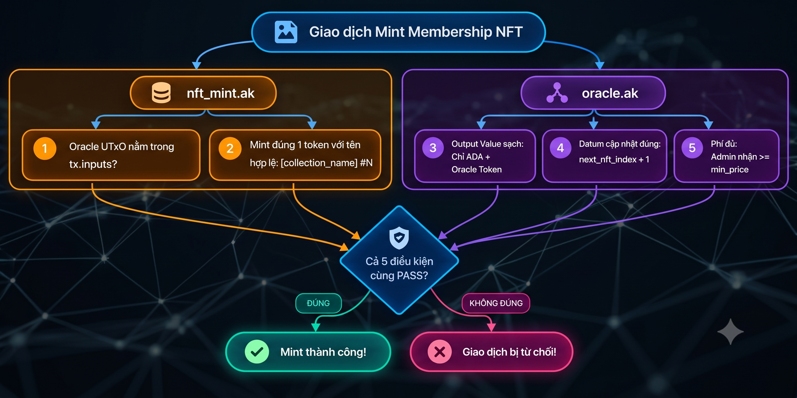

Mục lục bài học
Smart Contract của Membership NFT được thiết kế với 2 hợp đồng chính phối hợp hoạt động (oracle.ak, và nft_mint.ak) và 1 hợp đồng phụ (one_shot.ak) để mint Oracle NFT định danh của Oracle UTxO (State Thread Token). Bây giờ chúng ta sẽ đi vào chi tiết từng validator.
one_shot.ak)Hợp đồng này có nhiệm vụ: Cho phép mint Oracle NFT và burn token này khi cần đóng hệ thống.
Hai hành động này được định nghĩa trong kiểu Action của redeemer:
pub type Action {
Minting
Burning
}Khai báo validator với tham số là mã OutputReference của một param UTxO (utxo_ref). Trong validator triển khai duy nhất handler mint:
validator one_shot(utxo_ref: OutputReference) {
mint(redeemer: Action, policy_id: PolicyId, self: Transaction) {
// Logic `mint` handler
}
else(_) {
fail
}
}mint handler:Dùng expect để đảm bảo rằng có đúng 1 loại token được mint thuộc policy_id và trích xuất ra được số lượng mint quantity.
expect [Pair(_asset_name, quantity)] =
self.mint
|> assets.tokens(policy_id)
|> dict.to_pairs()assets.tokens trích xuất từ trường mint của giao dịch, trả về các token thuộc policy_id dưới dạng một Dictionary ánh xạ giữa tên tài sản và số lượng: Dict<AssetName, Int>.List<Pair<AssetName, Int>>).expect đảm bảo rằng danh sách này chỉ có đúng một phần tử, đồng thời bóc tách số lượng mint vào biến quantity. Lưu ý rằng policy này hoàn toàn không quan tâm đến tên token (_asset_name), bất kỳ tên token nào cũng được chấp nhận.Kiểm tra xem UTxO tham số (utxo_ref) có nằm trong danh sách UTxO đầu vào (inputs) sẽ bị tiêu thụ trong giao dịch hay không:
let is_utxo_consumed = list.any(self.inputs, fn(input) { input.output_reference == utxo_ref })Pattern matching để phân nhánh hành động theo redeemer:
Minting: Chỉ cho phép mint đúng 1 token và tiêu thụ UTxO tham số.Burning: Chỉ cho phép burn đúng 1 token (quantity bằng -1). when redeemer is {
Minting -> is_utxo_consumed? && (quantity == 1)?
Burning -> (quantity == -1)?
}Lưu ý: Tại sao ở nhánh
Burningchúng ta chỉ kiểm tra số lượng -1, mà có vẻ như bỏ quên việc kiểm tra quyền của người ký (yêu cầu chữ ký Admin)? Lý do là vì Oracle NFT luôn nằm trong Oracle UTxO dưới sự giám sát của Oracle Validator. Bất kỳ ai muốn đốt token này thì trước tiên phải mở khóa được UTxO đó, và chốt chặn chữ ký Admin được đặt tạioracle.ak!
Trước khi đi vào chi tiết mã nguồn của 2 hợp đồng chính, chúng ta sẽ cùng xem xét cách phối hợp hoạt động của chúng trong cơ chế multi-validators.
Yêu cầu của dApp là có cơ chế tính phí mint.
Do đó, OracleDatum ngoài lưu trữ số thứ tự sắp được mint, còn có thêm các thông tin thanh toán bao gồm phí mint và địa chỉ nhận thanh toán. Cụ thể:
pub type OracleDatum {
next_nft_index: Int, // Số thứ tự của NFT tiếp theo sẽ mint
min_price: Int, // Mức phí mint tối thiểu tính bằng lovelace
admin_address: Address, // Địa chỉ ví Admin nhận phí mint
}Khi người dùng thực hiện mint NFT, cả hai hợp đồng nft_mint.ak và oracle.ak được kích hoạt đồng thời trong cùng một giao dịch, cùng kiểm tra 5 chốt chặn:

Cầu nối Multi-Validator:
Điều kiện số 1: Oracle UTxO nằm trongtx.inputschính là cầu nối then chốt giữa hai validator.
- Bằng việc bắt buộctx.inputsphải chứa Oracle UTxO (có một UTxO nằm trên chính xácoracle_addressvà chứaoracle_nft_policy),nft_mint.akchắc chắn 100% rằngoracle.akcũng được kích hoạt trong cùng giao dịch. Nhờ đó,nft_mint.akan tâm ủy quyền các tác vụ kiểm tra quan trọng khác chooracle.ak.
- Để thiết lập "sợi dây kết nối" này,nft_mintnhận các tham số cấu hình gồmoracle_nft_policyvàoracle_address.
| # | Validator | Điều kiện kiểm tra | Ý nghĩa |
|---|---|---|---|
| 1 | nft_mint.ak |
Oracle UTxO nằm trong tx.inputs | Đảm bảo Oracle UTxO được chi tiêu trong giao dịch -> kích hoạt oracle.ak. |
| 2 | nft_mint.ak |
Mint đúng 1 token với tên hợp lệ: [collection_name] #N | Đảm bảo token sinh ra là một NFT với tên đúng theo quy định. |
| 3 | oracle.ak |
Output sạch: Chỉ ADA + Oracle Token | Đây là bước kiểm tra phụ, đảm bảo Oracle UTxO mới trả về script không bị pha lẫn token rác, gây nhiễu hệ thống. |
| 4 | oracle.ak |
Datum cập nhật đúng: next_nft_index + 1 |
Đảm bảo số thứ tự tăng tuần tự, bảo toàn nguyên vẹn min_price và admin_address trong Oracle Datum mới. |
| 5 | oracle.ak |
Phí đủ: Admin nhận >= min_price | Người dùng trả đủ phí tối thiểu (min_price) vào ví của Admin. |
Bây giờ, chúng ta sẽ lần lượt mổ xẻ mã nguồn Aiken chi tiết của từng validator để xem 5 chốt chặn trên được hiện thực hóa như thế nào.
nft_mint.ak)Hợp đồng này quy định quy tắc phát hành Membership NFT (hiện thực các chốt chặn 1, 2 của logic mint).
Quyết định Thiết kế: DApp Membership NFT được thiết kế chỉ với chức năng đúc thẻ thành viên mới mà không hỗ trợ hành động đốt để bảo toàn tính liên tục của bộ sưu tập (tránh việc tự do đốt làm khuyết số thứ tự trong bộ sưu tập).
Do đó, hợp đồng không cần phân nhánh và sử dụng redeemer (_redeemer: Data).
Validator nhận vào 3 tham số:
collection_name: ByteArray: Tiền tố tên bộ sưu tập ("C2VN Membership").oracle_nft_policy: PolicyId: Policy ID của Oracle Token (dùng để định vị Oracle UTxO).oracle_address: Address: Địa chỉ của hợp đồng oracle.ak.validator nft_mint(
collection_name: ByteArray,
oracle_nft_policy: PolicyId,
oracle_address: Address,
) {
mint(_redeemer: Data, policy_id: PolicyId, tx: Transaction) {
let Transaction { inputs, mint, .. } = tx
// Các logic kiểm tra chi tiết bên dưới...
}
else(_) {
fail
}
}Chốt chặn 1: Đảm bảo sự có mặt của Oracle UTxO
// Tìm input chứa Oracle Token tại chính xác oracle_address
expect [oracle_input] =
inputs_at_with_policy(inputs, oracle_address, oracle_nft_policy)Tìm trong danh sách tx.inputs xem có UTxO nào vừa nằm tại oracle_address, vừa chứa token mang oracle_nft_policy hay không. Kết quả khớp với danh sách đúng 1 phần tử ([oracle_input]), khẳng định giao dịch tiêu thụ chính xác Oracle UTxO duy nhất.
Lưu ý:
1. Định danh tài sản với One-Shot Token: Thông thường trên Cardano, để định danh đầy đủ một tài sản, chúng ta cần cả hai thành phần:PolicyIdvàAssetName. Tuy nhiên với Oracle Token (STT), chúng ta chỉ cần dựa vàoPolicyIdlà đã đủ để định vị nó. Đây là điểm đặc biệt của One-Shot Policy: nó đảm bảo trên toàn bộ blockchain chỉ có đúng một token duy nhất tồn tại dưới policy ID này.
2. Sự đánh đổi về mặt kiến trúc: Việc kiểm tra đồng thời cả địa chỉ (oracle_address) lẫn Policy ID (oracle_nft_policy) là một phép kiểm tra chặt chẽ. Trên thực tế, nếu Oracle token được khởi tạo đúng cách (gửi vào đúng địa chỉ hợp đồngoraclengay từ đầu), thì bản thân sự hiện diện của Oracle Token đã đủ để nhận diện Oracle UTxO. Việc kiểm tra thêm cảoracle_addressở đây sẽ tạo nên một sự ràng buộc kiến trúc thú vị mà chúng ta sẽ phân tích thêm ở Mục 5.
Đọc số thứ tự từ Oracle Datum:
expect InlineDatum(input_datum) = oracle_input.output.datum
expect OracleDatum { next_nft_index, .. }: OracleDatum = input_datumTrích xuất InlineDatum từ Oracle UTxO vừa tìm được để đọc giá trị next_nft_index làm số thứ tự cho NFT sắp mint.
Chốt chặn 2: Mint đúng 1 NFT với tên hợp lệ
let asset_name =
collection_name
|> concat(" #")
|> concat(convert_int_to_bytes(next_nft_index))
only_minted_token(mint, policy_id, asset_name, 1)<collection_name> + " #" + <next_nft_index> (ví dụ: "C2VN Membership #1").only_minted_token kiểm tra trường mint của giao dịch có đúng 1 tài sản dưới policy_id, với đúng tên asset_name và đúng số lượng mint bằng 1.Lưu ý: Nhờ có Chốt chặn 1,
nft_mint.akhoàn toàn yên tâm giao phó các kiểm tra trạng thái và thanh toán còn lại chooracle.ak!
oracle.ak)Đây là trung tâm quản lý trạng thái của dApp, chịu trách nhiệm lưu giữ biến đếm next_nft_index, bảo vệ việc chuyển đổi trạng thái (State Transition) và đảm bảo tiền phí mint được thanh toán cho Admin (hiện thực các chốt chặn 3, 4, 5).
Hai hành động khi tương tác với validator được định nghĩa trong OracleRedeemer:
pub type OracleRedeemer {
MintNFT // Hành động mint NFT
StopOracle // Hành động đóng hệ thống, hủy Oracle token
}Để có thể nhận biết chính xác UTxO đang được chi tiêu là Oracle UTxO, oracle.ak được tham số hóa bởi Policy ID của Oracle NFT oracle_nft_policy. Validator triển khai duy nhất handler spend:
validator oracle(oracle_nft_policy: PolicyId) {
spend(
datum_opt: Option<OracleDatum>,
redeemer: OracleRedeemer,
out_ref: OutputReference,
tx: Transaction,
) {
// Bóc tách dữ liệu giao dịch và tìm target input
let Transaction { mint, inputs, outputs, extra_signatories, .. } = tx
expect Some(OracleDatum { next_nft_index, min_price, admin_address }) = datum_opt
expect Some(own_input) = find_input(inputs, out_ref)
// Các logic kiểm tra chi tiết bên dưới...
}
else(_) {
fail
}
}Đảm bảo own_input chứa Oracle Token: Trích xuất trực tiếp tài sản thuộc oracle_nft_policy từ own_input.output.value và đảm bảo có đúng 1 token trong giá trị được trích ra này:
expect [Pair(oracle_nft_name, 1)] =
own_input.output.value
|> assets.tokens(oracle_nft_policy)
|> dict.to_pairs()Bảo vệ State Transition: Với hành động MintNFT, cần đảm bảo giao dịch có đúng 1 Oracle UTxO đầu ra tại địa chỉ script. Với hành động StopOracle, cần đảm bảo không còn Oracle UTxO đầu ra tại địa chỉ script (Oracle Token sẽ bị đốt trong giao dịch). Gộp biểu thức kiểm tra này với redeemer vào một tuple để khớp mẫu 1 lần:
let own_address = own_input.output.address
when
(
redeemer,
outputs_at_with_policy(outputs, own_address, oracle_nft_policy),
)
is {
(MintNFT, [only_output]) -> {
// Có đúng 1 UTxO chứa đầu ra Oracle token tại địa chỉ script
// Xác thực 3 chốt chặn 3, 4, 5
}
(StopOracle, []) -> {
// Không còn UTxO đầu ra chứa Oracle token tại địa chỉ script
// Xác thực điều kiện dừng hệ thống
}
_ -> False
}MintNFT:Khi người dùng mint NFT, cả 3 điều kiện sau bắt buộc phải đồng thời thỏa mãn:
is_output_value_clean) let is_output_value_clean = list.length(flatten(only_output.value)) == 2Đây là điều kiện phụ đảm bảo Oracle UTxO mới chỉ chứa đúng 2 loại tài sản: ADA và Oracle Token. Ngăn chặn kẻ xấu gửi kèm nhiều token rác vào Oracle UTxO gây nhiễu hệ thống.
is_index_updated) let is_index_updated =
only_output.datum == InlineDatum(
OracleDatum {
next_nft_index: next_nft_index + 1,
min_price,
admin_address,
},
)Bắt buộc biến đếm next_nft_index tăng đúng +1, đồng thời giữ nguyên vẹn min_price và admin_address.
is_fee_paid) let is_fee_paid =
get_all_value_to(outputs, admin_address)
|> value_geq(from_lovelace(min_price))Dùng hàm tiện ích get_all_value_to để tính tổng tài sản chuyển tới địa chỉ admin_address trong outputs, đảm bảo ≥ giá trị min_price Lovelace.
Ba chốt chặn phải cùng thỏa mãn trong biểu thức kiểm tra cuối cùng:
is_output_value_clean? && is_index_updated? && is_fee_paid?StopOracle: Đóng hệ thống & Thu hồi Oracle TokenKhi Admin muốn dừng dApp, giao dịch phải thỏa mãn 2 điều kiện:
is_admin_signed)is_oracle_nft_burnt)// outputs_at_with_policy(outputs, own_address, oracle_nft_policy) == []:
// -> Không có output tại địa chỉ script chứa Oracle token
// -> Oracle UTxO không còn tồn tại
(StopOracle, []) -> {
let is_oracle_nft_burnt =
only_minted_token(mint, oracle_nft_policy, oracle_nft_name, -1)
let admin_key = address_payment_key(admin_address)
let is_admin_signed = key_signed(extra_signatories, admin_key)
is_oracle_nft_burnt? && is_admin_signed?
}Thiết kế hiện tại của cơ chế multi-validator là tham chiếu 1 chiều: oracle → nft_mint.
nft_mint biết về oracle (thông qua tham số oracle_address). Nó có thể kiểm tra để biết chắc oracle cũng cùng chạy trong giao dịch.
Tuy nhiên, ở chiều ngược lại, oracle không biết gì về nft_mint. Nó không biết chắc rằng nft_mint có được chạy cùng nó không.
Một ai đó có thể gửi giao dịch chỉ kích hoạt oracle.ak mà không chạy nft_mint.ak:
next_nft_index = next_nft_index + 1.nft_mint.ak (tx.mint rỗng).Giao dịch "Spam Tăng Index":
- Inputs: Oracle UTxO (index = 2) + 10 ADA của Attacker
- Outputs: Oracle UTxO mới (index = 3) + Admin nhận 10 ADA
- Mint: [RỖNG] (Không có NFT nào được phát hành)#1, #3, #5...), biến đếm next_nft_index không còn phản ánh đúng tổng số NFT đang lưu hành thực tế (số lượng NFT thực tế = next_nft_index - 1).oracle.ak cần phải biết nft_mint_policy để kiểm tra giao dịch có mint token thuộc nft_mint_policy không.oracle(nft_mint_policy) ⇄ nft_mint(oracle_address/oracle_script_hash), cả hai Script đều đòi hỏi Script Hash của nhau tạo thành một vòng biến đổi vô tận "con gà - quả trứng".
[📸 Chèn ảnh sơ đồ: Vòng lặp phụ thuộc Circular Dependency giữa hai Validator]
Mã băm (Script Hash) được tính toán từ toàn bộ mã bytecode của script (sau khi áp tham số). Bất cứ khi nào tham số thay đổi, Script cũng thay đổi dẫn đến Hash của nó cũng thay đổi theo.
nft_mint_policy trong Datum của Oraclenft_mint_policy vào OracleDatum.
pub type OracleDatum {
next_nft_index: Int,
min_price: Int,
admin_address: Address,
nft_mint_policy: PolicyId,
}nft_mint chỉ cần kiểm tra input có chứa Oracle NFT (STT) mà không cần thêm 1 bước khẳng định nó nằm trên oracle_address. Từ đó có thể bỏ qua tham số oracle_address trên nft_mint, giúp oracle có thể nhận nft_mint_policy làm tham số mà không bị vòng lặp 2 chiều.one_shot bắt buộc đích đến của Oracle token sau khi mint phải là oracle_address. Khi đó, one_shot cần được tham số hóa bởi oracle_address / oracle_script_hash. Và ta lại rơi vào Vòng lặp tam giác:
one_shot ──► nft_mint(oracle_nft_policy/oneshot policy) ──► oracle(nft_mint_policy) ──► one_shot(oracle_address) ──► ...💡 Dù vậy, nếu dự án công khai mã nguồn hợp đồng để cộng đồng đối chiếu — hoặc trực tiếp dịch ngược Plutus bytecode từ giao dịch on-chain — người dùng hoàn toàn có thể kiểm tra và xác minh xem Oracle Token có được khóa chuẩn xác trong hợp đồng
oraclehay không, từ đó vẫn có thể yên tâm sử dụng giải pháp này.
spend (Oracle) và mint (NFT Mint) vào chung 1 validator duy nhất → Cả hai dùng chung script_hash → Tạo nên một tham chiếu 2 chiều tự nhiên chỉ có ở PlutusV3. Chúng ta sẽ sử dụng giải pháp này trong các module tiếp theo.| Tiêu chí | Tham số Hợp đồng (Script Parameter) | Trạng thái Động (UTxO Datum) |
|---|---|---|
| Bản chất | Nhúng trực tiếp vào bytecode Plutus → Là 1 phần của script | Đính kèm vào từng UTxO khóa tại script → Độc lập với script |
| Tính linh hoạt | Dữ liệu tĩnh, bất biến. Thay đổi dữ liệu sẽ đổi toàn bộ Script | Linh hoạt. Có thể thay đổi khi cần |
| Khi nào dùng | Các thông số cấu hình bất biến của hệ thống: tên của bộ sưu tập, Policy ID của State Thread Token, script hash của Oracle, ... | Trạng thái biến đổi theo thời gian: biến đếm số thứ tự, thông tin của 1 khoản vay, số dư tài khoản, ... |
min_price và admin_address là hoàn toàn cố định trong bài toán hiện tại → có thể đưa vào làm tham số hợp đồng.Bài 1: Chuyển admin_address thành tham số hợp đồng và bổ sung nhánh UpdatePrice vào Oracle validator cho phép Admin cập nhật giá mint.
min_price mới > 0 & khác min_price cũ.next_nft_index để bảo toàn tính liên tục của bộ sưu tập.Bài 2: Hãy lựa chọn một giải pháp và giải quyết lỗ hổng Spam tăng index đã chỉ ra ở trên.
Trong bài học tiếp theo, chúng ta sẽ bước sang lớp Off-chain và Frontend Next.js để lắp ráp giao dịch tương tác thực tế và đưa dApp lên môi trường Cardano Preprod. Hẹn gặp lại các bạn!